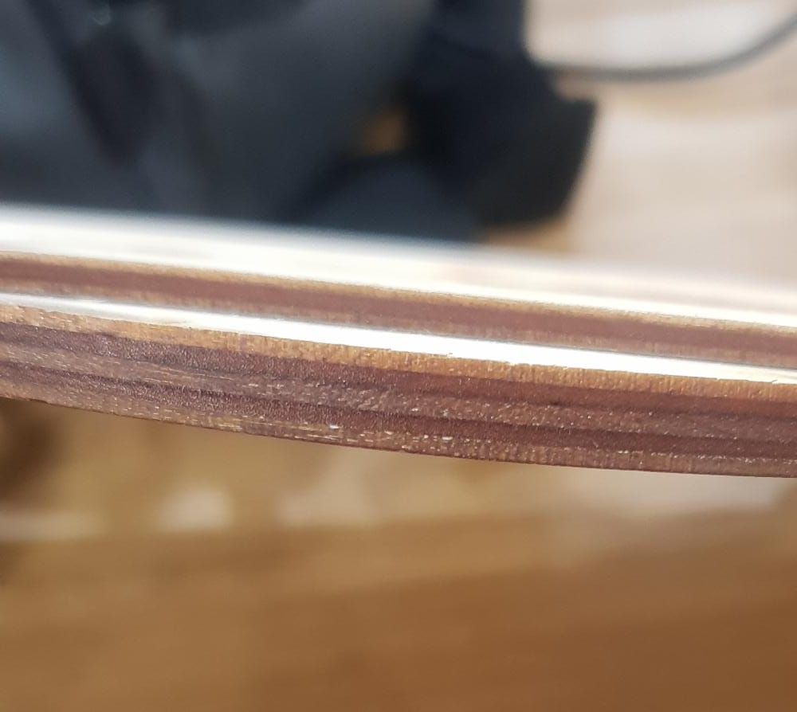
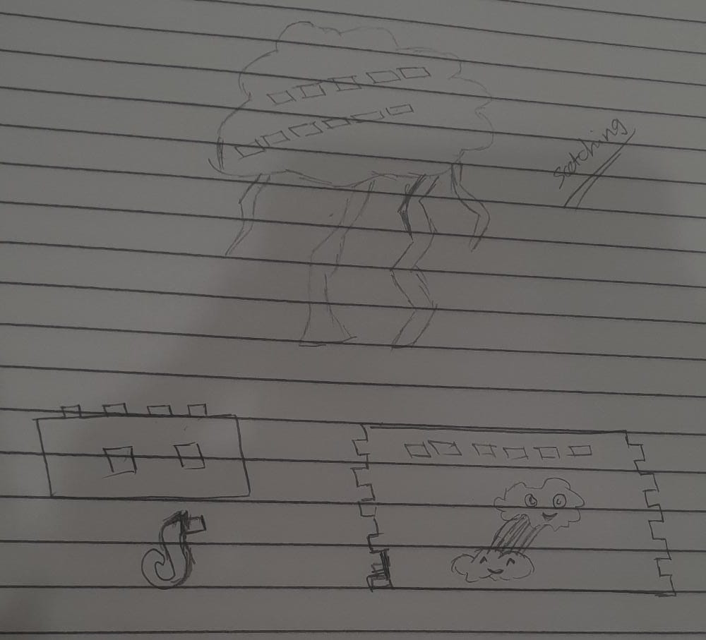
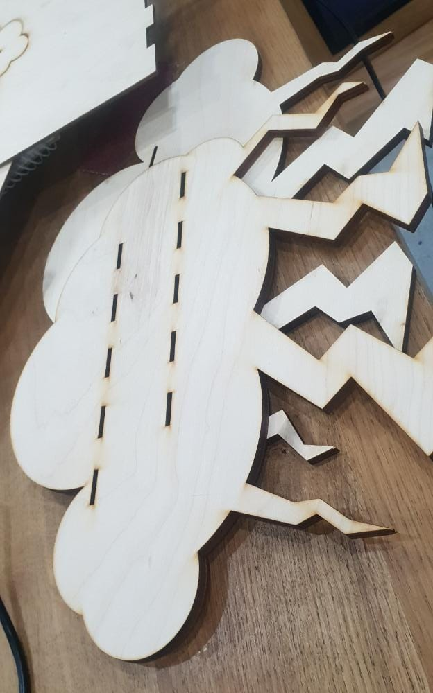
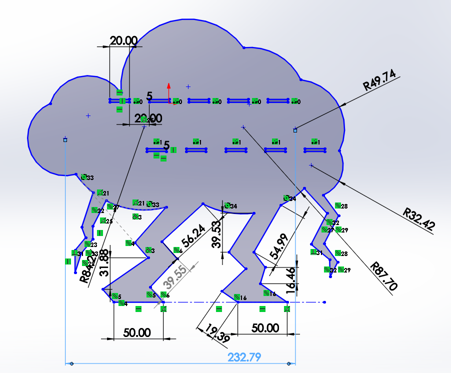
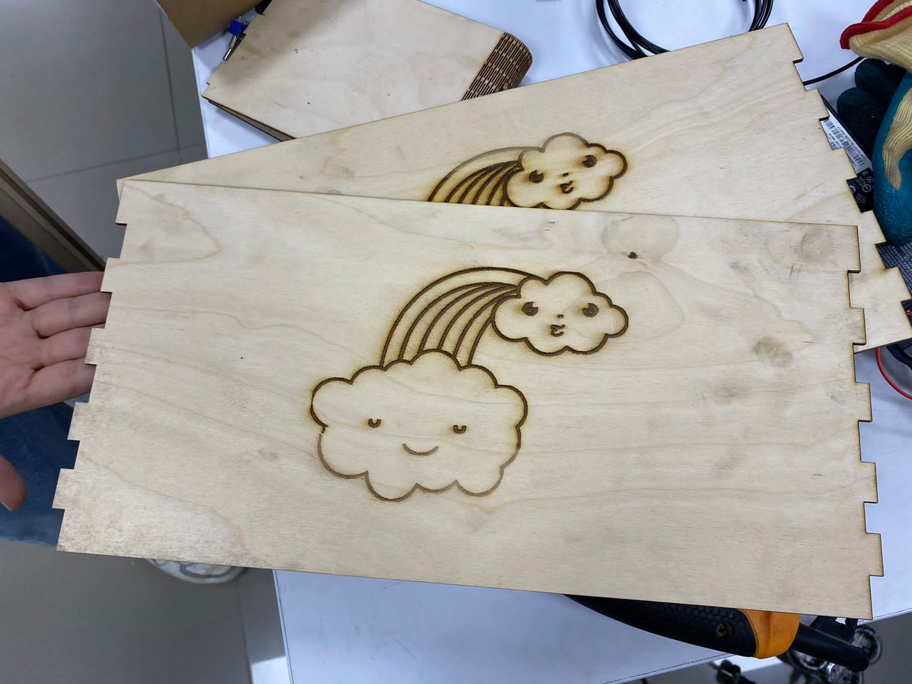
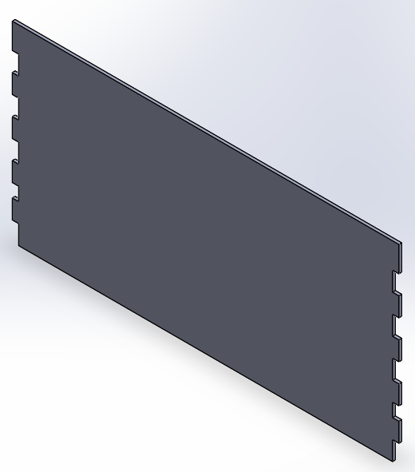
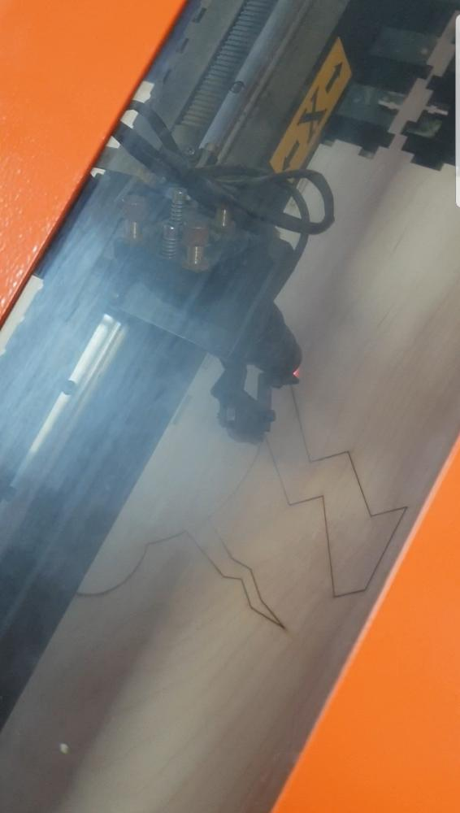

Construction process
Step 1:
The first thing I had to do was to select the idea that fits my material and performance requirements so brain storming was the first thing to do when it comes to initiating this project.
The project requirements were kinda simple, they were not about stricted by a specific field so I chose to make something relatable to the furniture like a simple coffe corner.
Step 2:
After selecting the idea I had to see the problems that may occure and to overcome them. My first issue was how to design a coffe corner to carry relatively high weights using a laser cutter. This problem was solved in the material selection phase when I dicided to use ply wood with 6.7 mm thickness with the side stands instead of 3mm and this gave me a range of stability to bear more wight. The picture attached clarifies the difference between them
Step 3:
I choose clouds as an inspiration source to design this coffe corner, I statrwd sketching the idea by drawing primitive lines as shown in the following picture.

Step 4:
This step was all obout selecting the dimensions for the stand .The max length and height of the side was about 30 cm * 35 cm as shown in the next picture. I created holes in the side to fix the shelfs to the side, these holes were 10mm * 3mm. the 3 mm dimension was not optional because it was the thickness of the ply wood used for the shelfs
 Step 5:
Now it is the time to design the shelf and it was 20 cm * 40cm in dimensions. the sides of the shelf had teeth to mesh with the stand from both sides. This assured that the strength of the design is high and it will not need glue to be fixed.
 
Step 6:
After selecting the dimensions it was the time to create the assembly file to make sure that all of them fit correctly together. The assembly confirmed that they worked together correctly so I used the laser cutter machine to cut the pieces and construct the prototype.

Step 7:
That's it, don't touch it's art --.